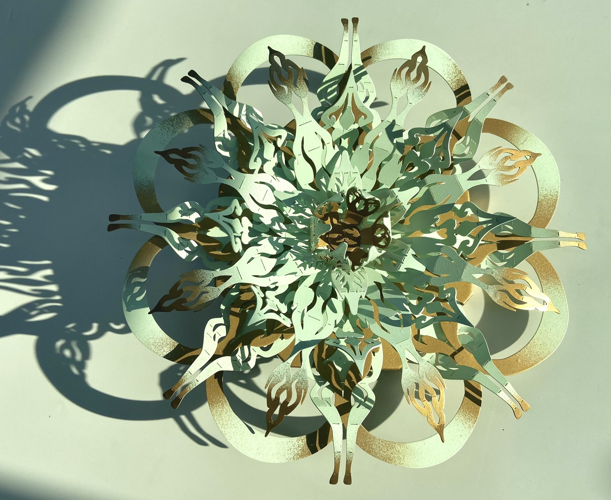

가영_ 佳永 佳英 假永 假英
- 연도Year
- 2023
- 재료Material
- EGI
- 크기Size
- 35×35×10cm
- 시리즈Series
- 금속 협업Metal Collaboration
- 협업Collaboration
- 팀 워밍 (warming)
- 프로젝트Project
- 금속 협업
화보 오브제 협찬
「가영(佳永, 佳英, 假永, 假英)」은 자연의 영속성과 예술 작품의 유한성을 대비하는 작업이다. 꽃을 모티프로 한 금속 조형은 단단하고 영원할 것처럼 보인다. 그러나 자연은 생성과 소멸을 반복하며 끊임없이 자신의 생명을 이어가는 반면, 작품은 아무리 견고한 금속으로 만들어졌더라도 결국 시간 앞에서 소멸한다.
인간은 아름다운 것을 마주하면 그것을 소유하고 싶어 하고, 지금 이 순간을 붙잡아 영원히 보존하고자 한다. 사진을 남기고, 박제를 하고, 작품을 만든다. 그러나 영원성은 형태를 고정하는 것에서 비롯되지 않는다. 생성과 소멸을 반복하며 이어지는 생명력 속에서 비로소 지속된다.
작품은 자연의 꽃을 금속으로 치환하고, 다시 예술이라는 프레임 안으로 옮긴다. 예술은 작품에 권위를 부여하고, 보존과 수집의 대상이 되게 하며 생존의 시간을 연장한다. 그러나 그 시간은 자연의 시간과는 다르다. 작품은 결국 누군가의 관심과 기억, 제도와 역사 속에서만 살아남을 수 있다. 내가 어떤 작가가 되는지, 작품이 어떤 맥락에서 기억되는지에 따라 그 생명은 달라진다.
자연은 인간 없이도 스스로 생성과 소멸을 반복하며 존재를 이어간다. 반면 이 작업은 인간의 시선과 제도, 기억이 있어야만 존재를 지속할 수 있는 연약한 생명체이다.
Gayeong (佳永, 佳英, 假永, 假英) is a work that contrasts the permanence of nature with the finitude of the artwork. The metal sculpture, with the flower as its motif, looks solid, as though it might last forever. Yet while nature keeps its life going endlessly through repeated cycles of coming into being and passing away, the artwork, however solid the metal it is made of, will in the end perish before time.
When people encounter something beautiful, they want to possess it; they want to seize this very moment and preserve it forever. They take photographs, they preserve specimens, they make artworks. But permanence does not come from fixing a form. It lasts only within a vitality that carries on through repeated cycles of coming into being and passing away.
The work translates the flowers of nature into metal and then moves them into the frame called art. Art lends the work authority, makes it an object of preservation and collection, and extends its time of survival. But that time is different from the time of nature. In the end, the work can survive only in someone's attention and memory, in institutions and in history. Its life will differ depending on what kind of artist I become and in what context the work is remembered.
Nature carries on its existence through cycles of coming into being and passing away, even without humans. This work, by contrast, is a fragile living thing that can go on existing only through the human gaze, institutions and memory.